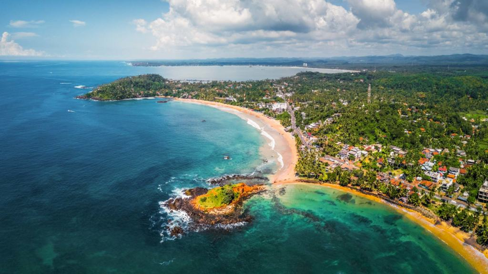
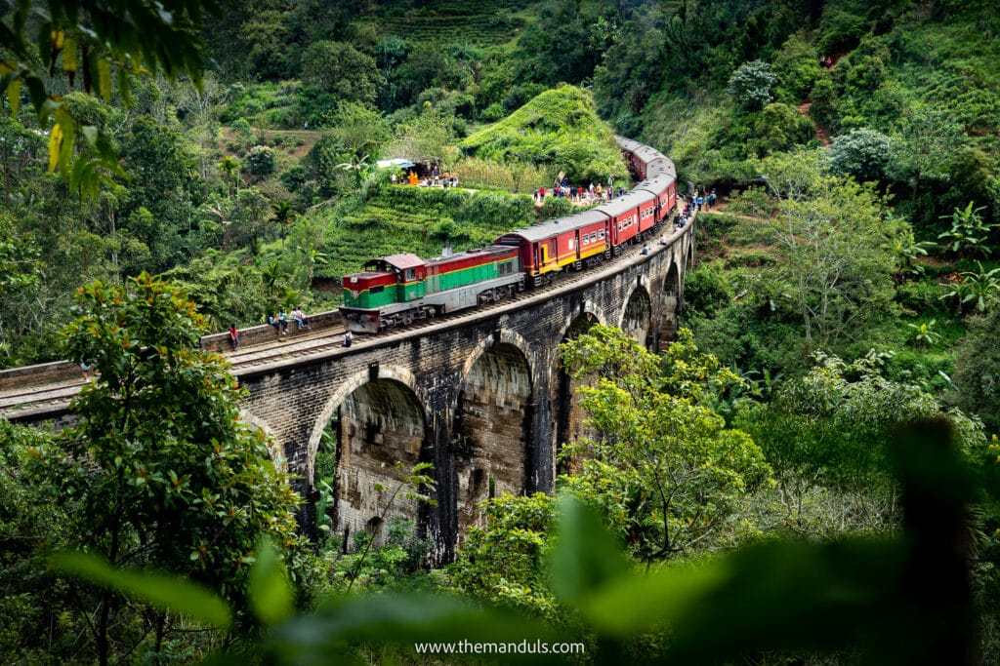
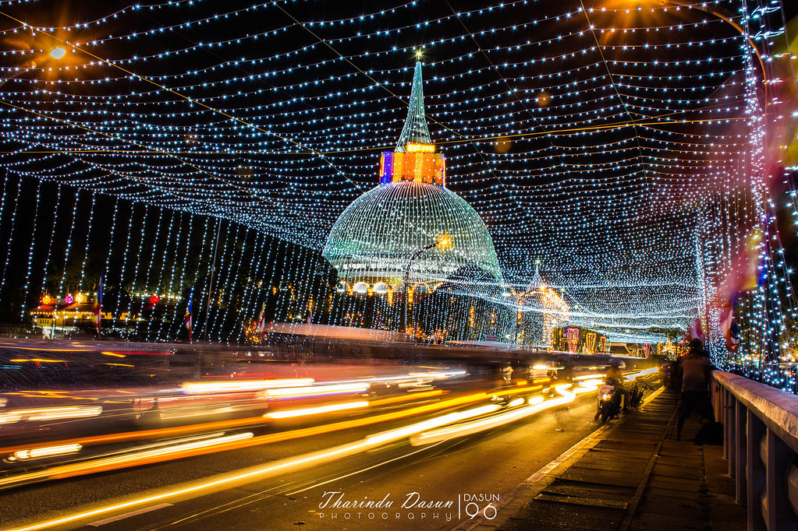
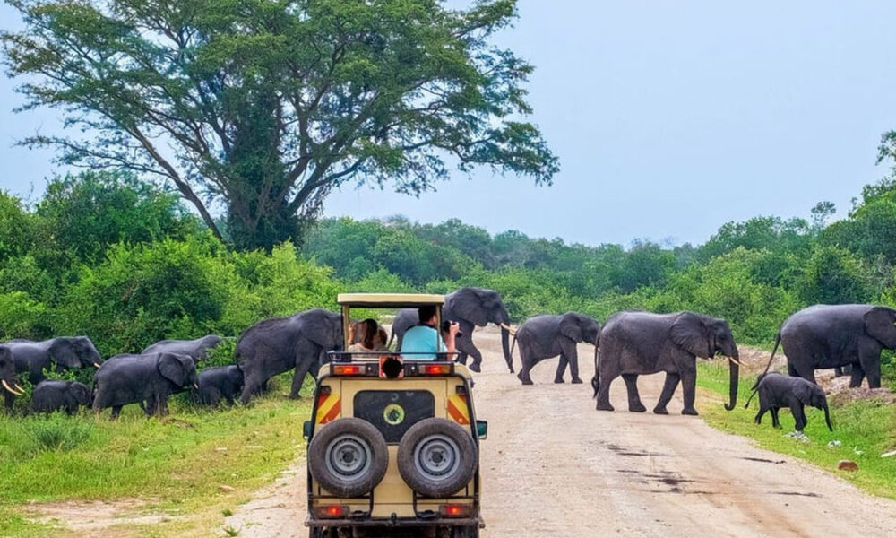
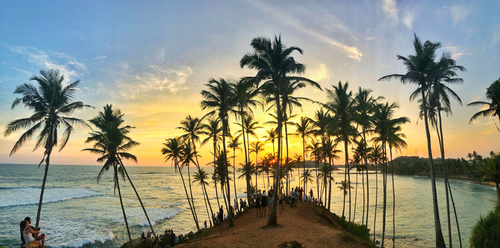
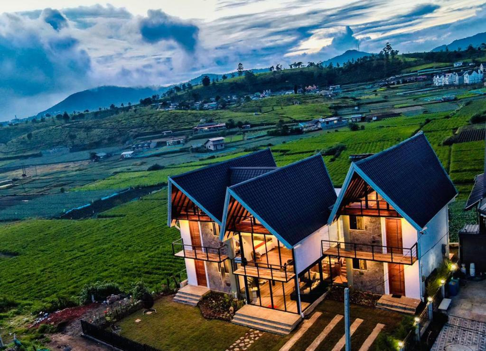
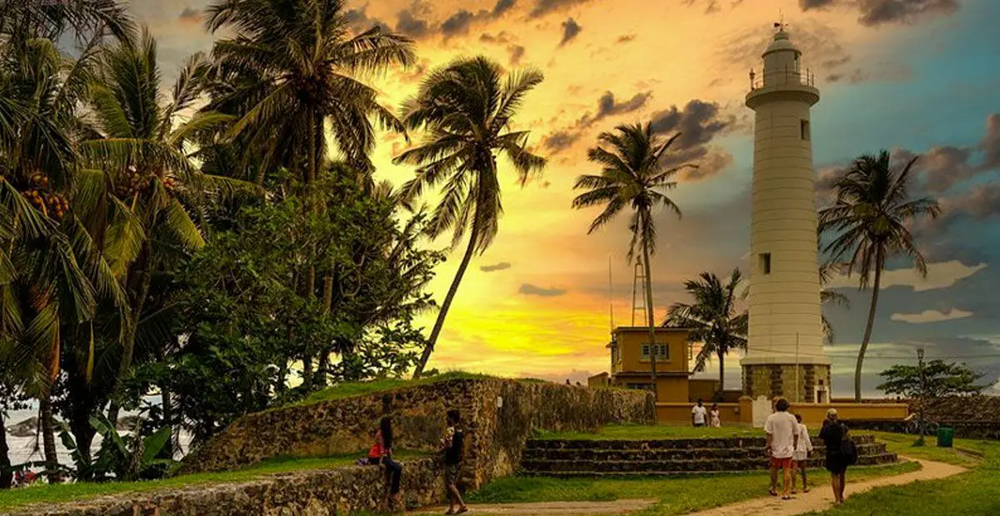

Welcome to Explore Ceylon
Discover the beauty, culture, and wonder of Sri Lanka
Top Destinations






Frequently Asked Questions
The best time to visit Sri Lanka is from December to March for the west and south coasts, and from April to September for the east coast.
Yes, Sri Lanka is generally safe for tourists, but it's always good to stay updated on local news and follow travel advisories.
Don't miss trying traditional dishes like Rice and Curry, Kottu Roti, Hoppers, and Lamprais.